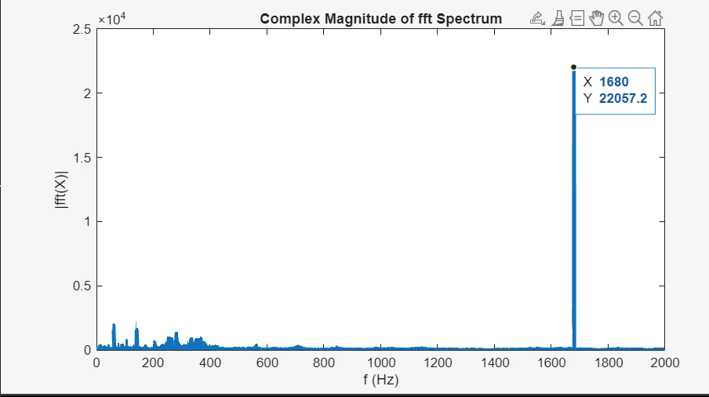
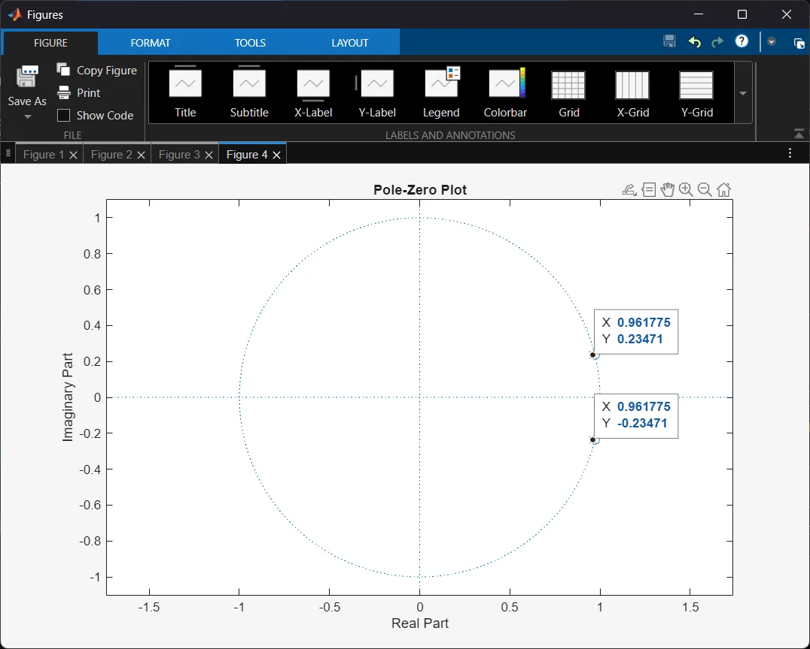

DP11 IIR notch-filter
Andre ordens IIR notch-filter som fjerner en pipetone på 1680 Hz fra lyd med 44,1 kHz samplingsfrekvens, implementert i Q15 på AVR128DB48.

Resultat
- Rundt 45 dB demping ved pipetonen med minimal påvirkning på resten av lyden.
- Filteret trenger bare fire tilstandsvariabler og fem koeffisienter, mot 165 tapper i FIR-løsningen fra DP9.
- Verifisert i MATLAB før implementasjon i C.
Figurer

